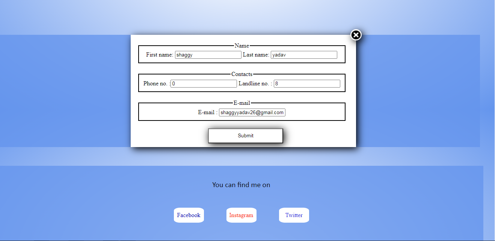

Site design
This site is designed to be as minimal as possible because I like minimalistic design. In my opinion a site should look good, feel good and be easy to use. The site follows a basic color profile throughout the pages and has a simple navigation menu which is consistent across all the pages. The name of the site is "Mysite" as it is literally my site. There is a logo in front of the site's name which symbolizes peace. The site consists of 5 pages in total. I'll go through each of their respective design decisions and details later.
You can see that about 90% of the overall site is in blue and white color and the rest is also almost just black, so the reason behind it is because I think the colors blue and white represent calmness and harmony. Originally I wanted to go with a plain black and white site but it didn't look so good therefore i changed to the current colors.
Now let's look at the individual pages in details. I will be mainly focusing on the standard laptop view (1024x810) but I will let you know when I talk about other screen sizes. Let us first go with the Index page.

Right of the bat we can see there's a big picture of a hourglass because I value time very much and I wanted to show that in one way or other. At first I wanted to go with a picture of a clock but a hourglass looked better. On the top of the page there is a logo representing peace and the name of the site which has a fading animation when the page loads. At the bottom of the page these's a basic introduction.
Now, let's go to our second page of the site, the Portfolio page.

The basic format of the page is same, the difference is that in this page there are placeholder images which will later be replaced by my work from term 2. The placeholder images are placed in grid format for a cleaner look.
Moving on to our next page we have our Curriculum vitae page or CV page.

In this page, as the name suggest, we have my CV. My CV is fitted into a table as per the need of the assignment. I went with a black and white finish to make it as simple as possible.
Up next we have our Site report page. In this page I have mentioned the design decisions I took for the website in details. I have not included a image of this page because we are currently in the page and we are looking at it.
As the last page we have our Contact page.
This page has my all contacts. My personal number and my social media are given in this page. Along with the contacts there is a form aswell following the guideline of the assignment. I'd say, this page was the most diffcult to make because of the form. I needed a close button icon, I had to make the form appear and dissappear on a click so I took help from a youtube video whose link I have provided in the contact's css.

All of the pages are fully responsibe in tablet(768X608) and mobile(425X608) view.